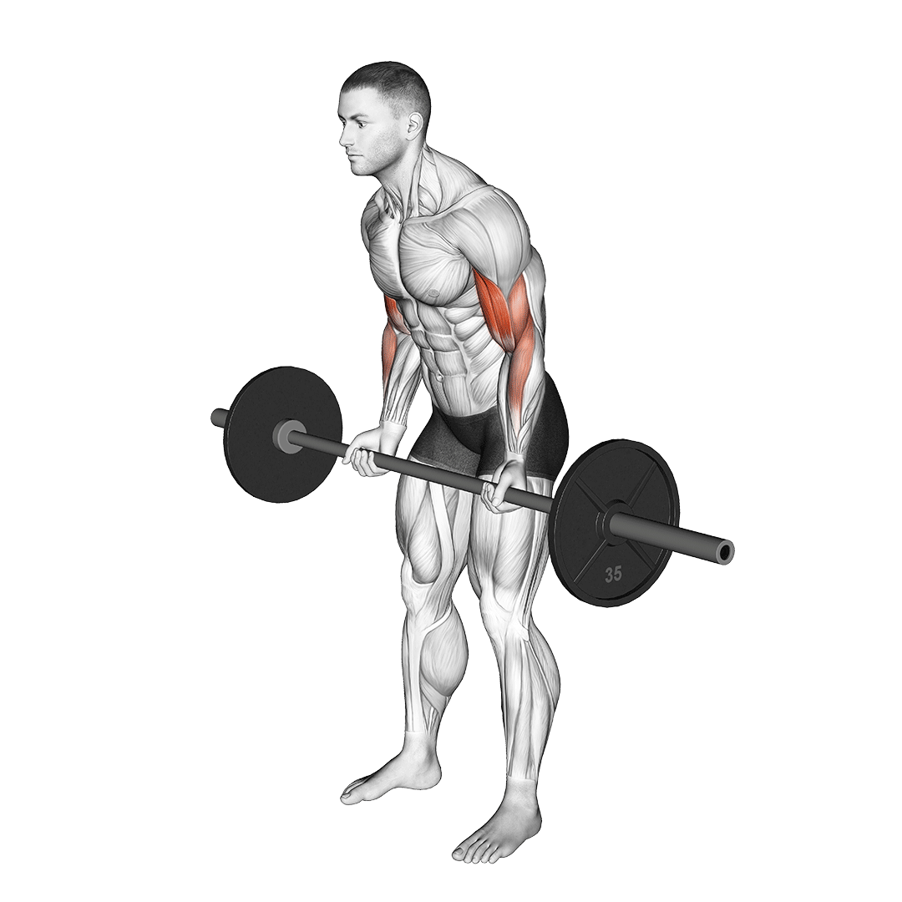
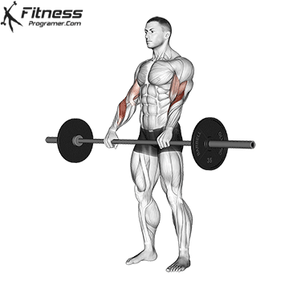

Ćwiczenia Mięśni Bicepsu
Barbell Curl

1. Trzymając ramiona nieruchomo, przesuń ciężarki do przodu, jednocześnie napinając bicepsy podczas wydechu.
2. Pochyl się i chwyć sztangę nachwytem, dłonie nieco szerzej niż na szerokość barków.
Podczas chwytania drążka trzymaj proste plecy i opuszczone ramiona. 3. Stań prosto, podnieś sztangę z ziemi i przyciągnij ją do bioder.
Podczas wykonywania tej czynności trzymaj łokcie blisko ciała i ramiona w dół. 4. Gdy sztanga znajdzie się na wysokości bioder, unieś ramiona tak wysoko, jak tylko potrafisz, utrzymując pozycję przez chwilę.
Podczas chwytania drążka trzymaj proste plecy i opuszczone ramiona. 3. Stań prosto, podnieś sztangę z ziemi i przyciągnij ją do bioder.
Podczas wykonywania tej czynności trzymaj łokcie blisko ciała i ramiona w dół. 4. Gdy sztanga znajdzie się na wysokości bioder, unieś ramiona tak wysoko, jak tylko potrafisz, utrzymując pozycję przez chwilę.
Dumbbell Curl

1. Stań prosto z hantlami w każdej ręce na wyciągnięcie ręki.
2. Podnieś jeden hantle i przekręć przedramię, aż znajdzie się w pozycji pionowej, a dłoń będzie skierowana w stronę ramienia.
3. Opuść do pozycji wyjściowej i powtórz z przeciwległym ramieniem
Dumbbell Hammer Curl

1. Trzymaj hantle neutralnym chwytem (kciuki skierowane w stronę sufitu).
2. Powoli unieś hantle na wysokość klatki piersiowej.
3. Wróć do pozycji wyjściowej i powtórz.
Barbell Reverse Curl

1. Weź podwójny chwyt na szerokość barków. Zegnij łokcie, trzymając łokcie schowane. Staraj się nie pozwolić, aby się rozszerzały.
2. Zginaj się, aż przedramię dotknie bicepsa. Następnie całkowicie wyprostuj łokcie w dolnej części każdego powtórzenia.
Cable Hammer Curl

1. Użyj mocowania uchwytu. Kabel powinien być poprowadzony aż do spodu maszyny.
2. Odwróć twarz od maszyny kablowej. Przesuń swoją postawę, aby mieć lepszą bazę wsparcia.3. Użyj neutralnego chwytu, kciuk skierowany w górę, mały palec w dół). Zegnij łokieć i wyprostuj.